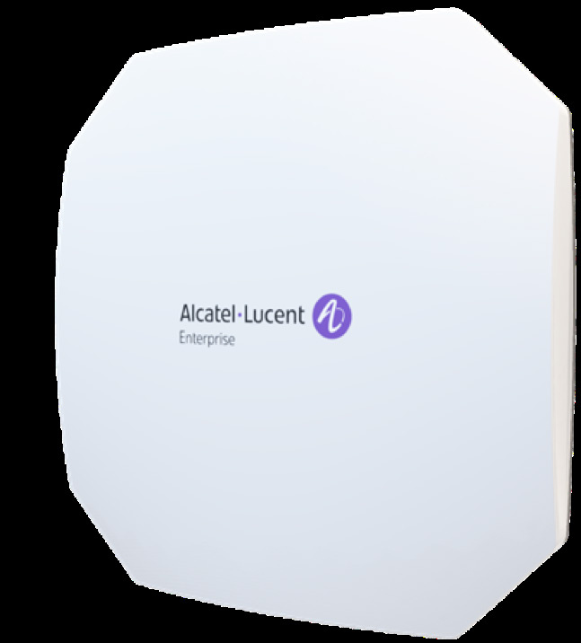

bp-ap1501-datasheet

R（触发场景）
- 数百分支/零售/小园区 Wi-Fi 7 平价换代：接入交换机仍 GbE/af-at（C1）
- 核对"最便宜 Wi-Fi 7"砍掉了什么：BLE/Zigbee、扫描射频、第二网口
- DPGPSK 多租户 PSK（酒店/MDU/住宅）方案配套（C12）
I（核心理念)
Wi-Fi 7 的 accessible entry point：三射频三频 2x2x3（2.4/5/6GHz 各 2x2），9.328Gbps，单 2.5GE 上联，仅 802.3at 22.19W——为中等密度分布式环境（branch/retail/small campus）设计，成本优先，IoT 射频全砍（P12/X11，<<
A1（选型差异）
- vs AP1511：1511 加 BLE 5.4/Zigbee、FTM、5GE 上联、MACsec、TPM2.0、bt 供电、768 客户端；要 IoT/定位/更高上联必升 1511（C1）
- vs AP1301（Wi-Fi 6 入门）：同为入门档，1501 速率 9.328G 对 1.77G、6GHz、EHT320；供电 at 对 af
- vs AP1521：1521 是 5G 4x4 + 扫描 + 10GE 的中端
- 砍配清单：无 BLE/Zigbee、无扫描、单网口、无 TPM、SNMP 仅 v2、Cirrus 30K/Terra 10K 管理规模是亮点
A2（规格速查表）
| 项目 | 规格 | 页码 |
|---|---|---|
| 射频架构 | 三射频三频：6GHz 2x2:2（5.76G，2SS EHT320）+ 5GHz 2x2:2（2.882G，2SS EHT160）+ 2.4GHz 2x2:2（688Mbps，2SS EHT40）；无扫描无 IoT 射频 | << |
| 聚合速率 | 9.328Gbps（688M@2.4G + 2.882G@5G + 5.76G@6G） | << |
| MIMO/速率档 | MLO、OFDMA、DL/UL MU-MIMO、4096-QAM、TxBF；EHT20/40/80/160/320；11be 后向兼容 a/b/g/n/ac/ax | << |
| 频段 | 2.4G/5G 四段/6GHz 四段（5.925-7.125GHz） | << |
| 以太网口 | 1x 多千兆 100M/1G/2.5G 上联 Eth0，802.3at PoE；无第二网口（X11） | << |
| PoE/供电 | 仅 802.3at，22.19W；DC 40-57V | << |
| USB-IoT | 1x USB 2.0 Type-C + 1x USB Type-C console | << |
| 蓝牙 | 无 BLE/Zigbee 射频（X11） | << |
| 天线 | 内置全向：5.6dBi @2.4G / 5.9dBi @5G / 6.4dBi @6G | << |
| 发射功率 | 聚合 26dBm@2.4G / 26dBm@5G / 27dBm@6G；巴西 24dBm | << |
| 工作温度 | 0°C ~ 50°C（Wi-Fi 7 代普遍放宽到 50°C） | << |
| Mount | 吊顶/壁装，套件另购（AP-MNT-IN-BE/CE/WE/WE2） | << |
| 容量 | 每射频 8 SSID；每射频 256 客户端 | << |
| 尺寸重量 | 190x190x38mm，760g；MTBF 1,087,617h（124.16 年） | << |
| 管理平台 | OmniVista 云 30K / Terra 10K（全系列最高档） / Express 集群 255；SNMP 仅 v2（X12）；本地 OmniVista 支持数据主权场景（C11） | << |
| 安全 | WPA3 CNSA/SAE、OWE、DPI、wIPS/wIDS、DPGPSK（酒店/MDU/住宅）；无 TPM | << |
| 订购 | OAW-AP1501-RW（禁 US, Japan）/ -US | << |
E（适用场景）
- 连锁零售/分支/小园区中密度 Wi-Fi 7 换代：现有布线与 af/at 交换机沿用（C1，<<
>>） - 酒店/MDU/住宅大规模 DPGPSK 动态组 PSK 认证（C12，<<
>>） - 数据不出境项目：本地 OmniVista 两形态表述自此代开始（C11，<<
>>）
B（限制与坑）
- 无 BLE/Zigbee、无扫描射频、单网口（X11，<<
>>）：要 IoT/定位至少 AP1511 - 仅 802.3at 22.19W（X12，<<
>>）：供电预算无弹性 - SNMP 只列 v2（X12，<<
>>）：Wi-Fi 7 代通病，安全网管集成需确认 - 无 6GHz 切 5G 的软件配置表述：未开放域 6G 射频价值受限（对比 1561/1570）
- 无 MACsec（1511 起才有）
- 吊装套件另购（X20，<<
>>）
来源：bp-stellar-ap-datasheets fulltext.md p66-76；verified.md C1/C10/C11/C12/P11/P12/P21/X11/X12/X18/X20/F1
仅供内部学习使用 · 教材版权归 ALE Training Services 所有